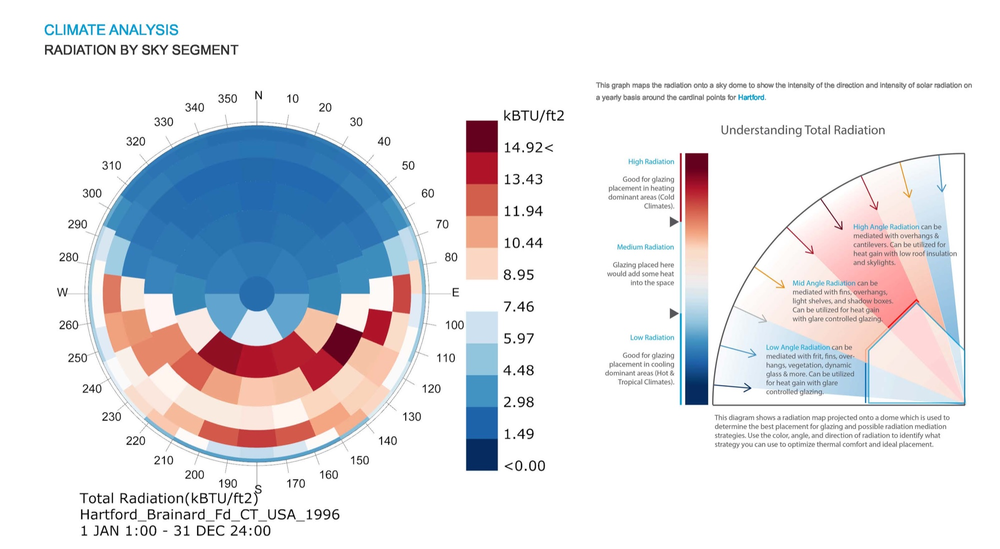
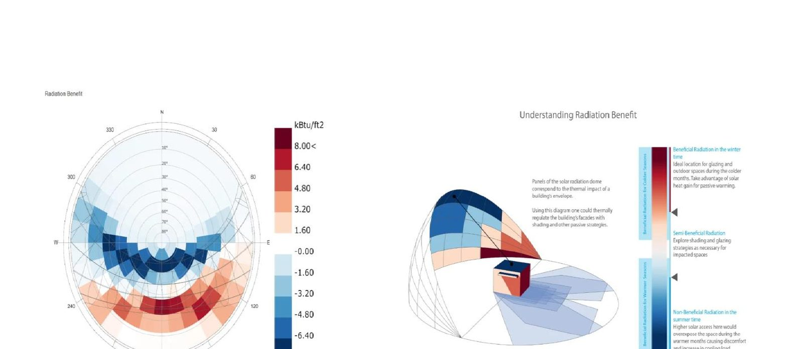
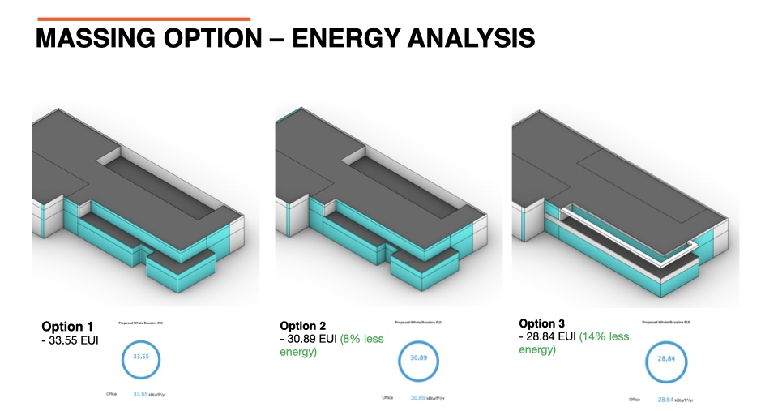
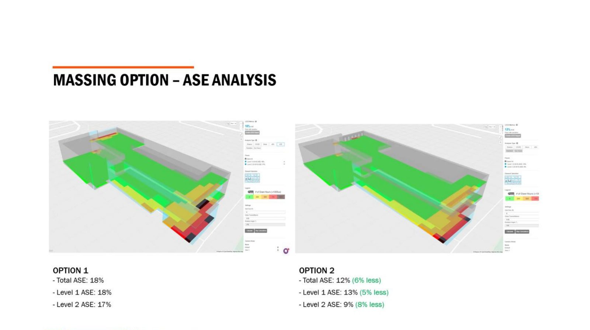
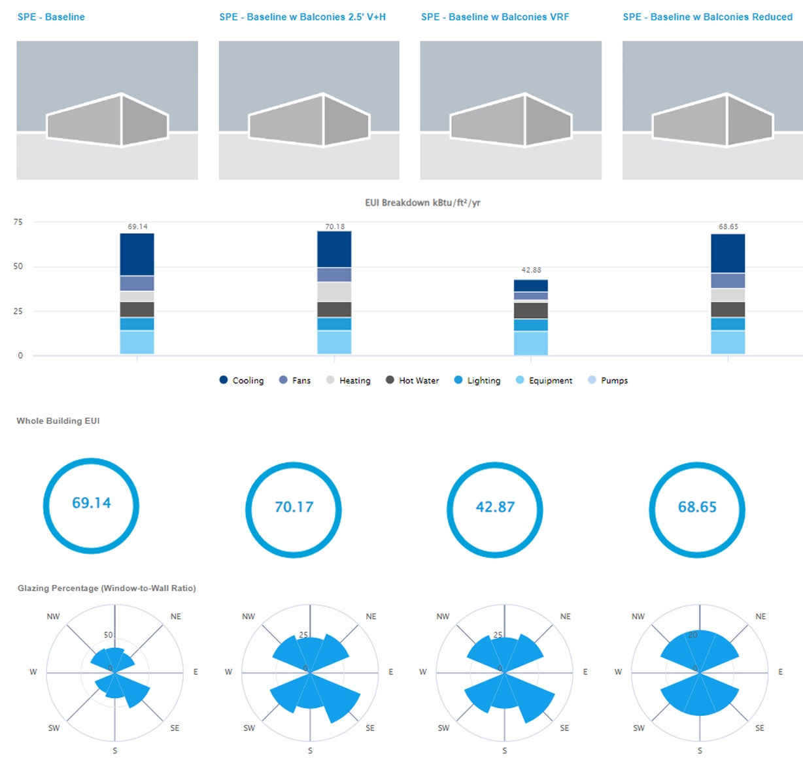
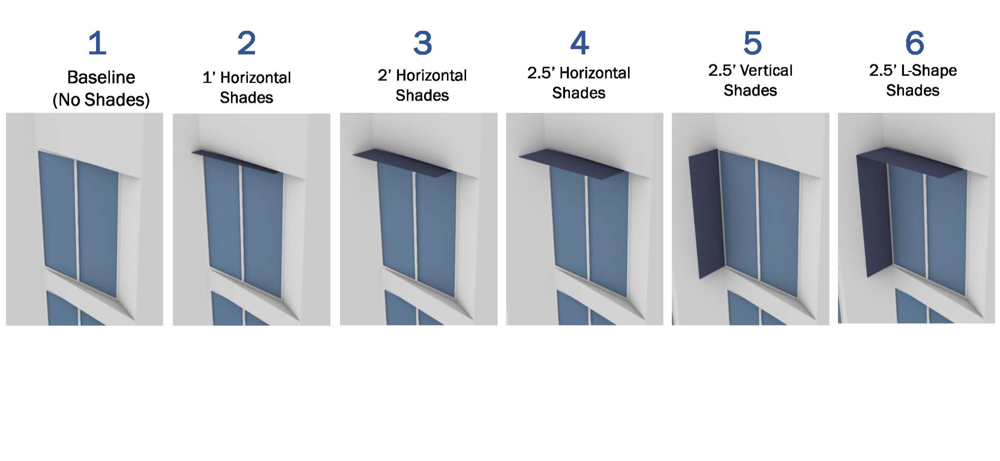
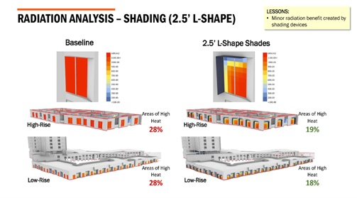
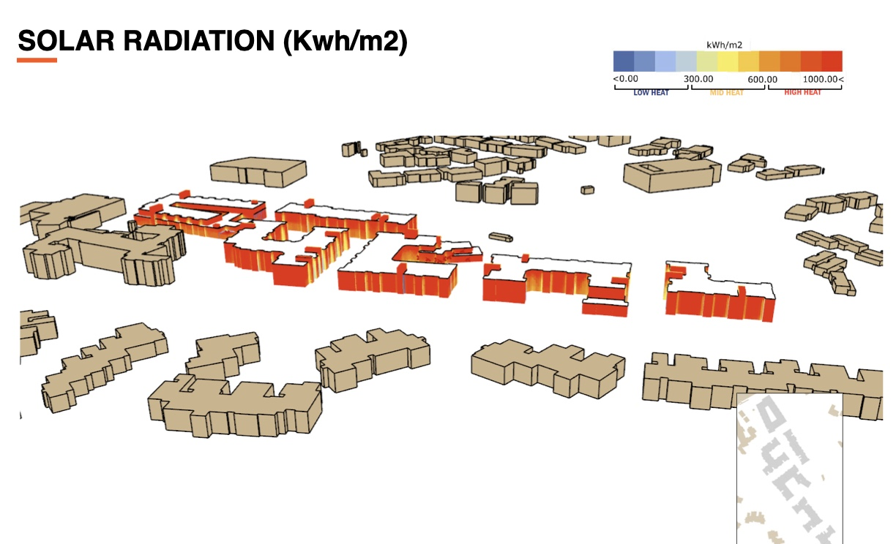
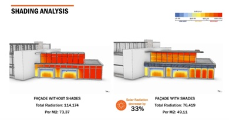
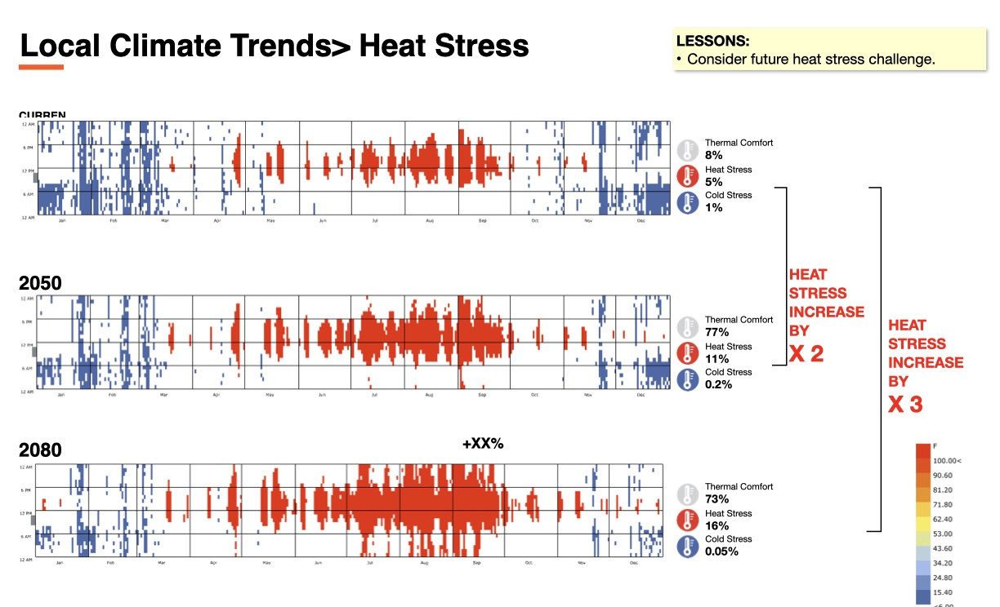

Part IThe argument
Operational vs embodied — the energy we mean
"Low energy" usually means one of two things, and the difference matters.
Operational energy is what the building uses each year while running — heating, cooling, lighting, equipment, hot water. It's what EUI tracks, what the 2030 Challenge targets, and what ASHRAE 90.1 and most certifications regulate through prescriptive or modeled compliance paths.
Upfront embodied energy is what manufacturing, transport, and construction spent before the building turned on. Paid before occupancy, mostly fixed for life.
Operational energy used to dominate the lifetime balance by an order of magnitude. Code progress has changed that. As envelopes tighten and equipment improves, upfront embodied impact claims a larger share — far enough that a high-performance building with a concrete-and-steel structure can spend a decade or more of avoided operational energy paying back what it took to build.
Most of what follows is about operational — where the loop, the five levers, and the case studies live, and where design feedback is fastest. A handful of decisions cross into embodied: structure, envelope thickness, and the mechanical sizing the envelope dictates. Those couplings get flagged as they come up.
What performance-informed design is
Energy modeling typically enters a project at the end. The architect designs the building, the engineer models it, the result becomes a code submittal or a LEED checklist. The model arrives after the decisions it could have shaped — modeling as validation, not as design input.
Performance-informed integrated design rearranges that. Energy, comfort, daylight, and glare are queried during design, not after. Numbers feed into design decisions instead of just checking them — a massing chosen partly on predicted EUI, a facade strategy chosen because the radiation overlay said so. Analysis lives where it can change the building.
The case for it is practical, not philosophical:
By the end of schematic, ~70–80% of a building's energy performance is locked in by massing, orientation, and WWR. Everything after is refinement around a fixed envelope. Analysis arriving at DD or later finds the building it could most have changed already gone.
Getting this wrong is concrete. Projects that run the loop late or skip it deliver 30–50% over their EUI target. The chiller, sized for an envelope that got value-engineered down post-bid, runs two tonnage steps too large at part-load most of the year. The retrofit at year ten or fifteen costs more than the original analysis would have, and the building still misses its targets.
Empirical support is thin but consistent. The clearest controlled evidence comes from Tsinghua's MOOSAS research: in a 2021 design experiment, 41 designers used rapid one-click EUI feedback during early office-building design, and the mean EUI of final outcomes dropped by about 10%. The estimates weren't full compliance models; fast prediction over simulation-backed data did that job. What mattered was that the feedback was present during design. In early design, speed and presence beat precision.
The obvious objection — who has time to do this on every project? — is the one the article ends on. The method earns its keep only if the loop stays cheap to run. That's a tooling problem, not a methodology one, and it shapes everything that follows.
The five levers
Five levers. Each has a phase where its leverage peaks, and a phase past which adjusting it costs more than it returns.
Climate. Sun path, prevailing winds, humidity profile, radiation distribution across the sky dome. Read before any design move. Determines which orientations carry beneficial gain, which demand shading, and which strategies — daylight, cross-ventilation, mass — apply at all.
Form. Massing, orientation, articulation, perimeter-to-area, courtyards, terraces. Locked in by end of schematic. The lever with the highest single-phase leverage on EUI: a massing change can move energy use 6–20% before any envelope decision is made.
Envelope. Window-wall ratio, glazing performance, shading geometry, R-values, thermal bridges, air-barrier continuity. Tunable through SD and DD. The lever practitioners reach for first — sometimes correctly, often not.
Systems. HVAC type, distribution, controls, heat recovery, domestic hot water. The lever that transforms what envelope choices can deliver. In some climates (hot-dry, hot-humid) it dwarfs envelope as a savings source.
Time. The climate file the building will operate against. A project specified now opens in 2030 and is still standing in 2080. The same shading and envelope decisions that look marginal today are doing 2× or 3× the work by mid-century.
Structure sits adjacent to this framework, not inside it. The five levers above are operational — they shape how much energy the building uses while running. The frame is almost entirely an embodied decision, on a different time scale and a different mechanism. It gets its own section below: the loop applies differently, and on projects already pulled toward 2030 operational targets, structure becomes the dominant lever for total lifetime impact.
System integration — how the levers couple
Levers don't act independently. Each decision in one reshapes what the next has to deliver, and the coupling — run knowingly — is where buildings get good. Three couplings between structure, envelope, and systems carry most of the weight.
Structure ↔ upfront embodied energy. The frame is one of the largest upfront embodied decisions in a project. Mass timber typically embodies 25–50% less A1–A5 manufacturing energy than concrete or steel; the carbon picture can be stronger still because timber stores biogenic carbon absorbed during tree growth, though the accounting depends on forestry, boundary, and end-of-life assumptions. Concrete sits at the high end; steel between, depending on recycled content and mill source. Beyond embodied: timber's lower thermal mass changes the building's response to diurnal swings, which shifts cooling strategy and night-purge potential. A coordinated structural choice makes the operational lever easier; an uncoordinated one makes it harder.
Envelope ↔ systems. A high-performance envelope — triple glazing where it earns its place, continuous insulation, controlled air leakage, reduced thermal bridging — does two things. It lowers operational energy directly. And it lowers peak load — the worst-hour demand the mechanical system has to meet — which sets equipment size. A 25–35% peak reduction often means one or two tonnage steps down on the chillers, smaller distribution, less mechanical-room footprint, and lower first cost. The envelope can pay back through MEP cost reduction before energy savings are tallied.
Systems ↔ systems. Mechanical efficiency isn't a single dial. Decoupling ventilation from thermal conditioning — VRF for sensible loads paired with DOAS for ventilation — lets each run at its own efficiency point, typically 15–35% better than conventional VAV. Heat-recovery ventilation captures exhaust heat. Properly-tuned controls — variable-speed pumping, demand-controlled ventilation, optimal-start scheduling — recover another 5–15% with no equipment change. Individually, none of these matters as much as the envelope decision that sized the equipment in the first place. Together, they compound.
The risk in practice is treating these as separate procurements — structure here, envelope there, MEP later. Done in sequence, each lever pays once and the synergy is missed. Done together, savings on one lever fund the next; pursued in isolation, each underdelivers.
Part IIThe method in practice
The loop that runs every phase
The phases differ. The loop that runs inside each phase doesn't.
The phase below tells you what version of the loop you're running.
Three projects across three phases. Each anonymizes a real engagement and shows what the loop produced when run with discipline.
Pre-design — reading the climate
The phase before drawing begins. Orientation, openings, and shading are still soft. The work is to read the site's climate into a small set of testable principles — where solar gain helps, where it harms, how the sky distributes radiation across the year. Everything that follows either honors those principles or knowingly overrides them.
Before any design move, the project asked the climate the simplest question available: where in the sky does the year's energy come from, and which parts of it help the building?


Two diagrams, one decision. The first showed the project where energy is. The second showed which energy to want. The result entering schematic: south transparency for winter heating gain, overhangs sized to reject summer high-angle sun, west glass restricted to cold-season needs only.
The lesson generalizes. Pre-design analysis isn't abstract climate documentation. It produces specific, testable orientation and shading principles that the rest of the project either honors or knowingly overrides — and either way, the override is informed.
Schematic — form before envelope
Schematic is where massing becomes a design decision rather than a program diagram. The defining move is comparative: hold envelope fixed, vary form, judge by EUI and daylight. The form that survives sets a ceiling on what envelope and systems can later achieve — which is why the biggest single-phase EUI move typically lives here.
Three massings were tested against an identical envelope. Same R-values, same glazing, same schedules. The only variable was form.


The stepped form was locked in by end of schematic, carrying a 14% energy reduction and 6% glare reduction. Before a single envelope choice was made.
This is the difference between form following program and form following analysis. The envelope that comes after now has 14% less load to deliver and 6% less glare to mitigate. Every glazing R-value, every shading depth, every system size benefits from a starting point already chosen with performance in mind. Form is the highest-leverage lever in the project, period. The schematic question isn't whether to use it; it's whether to ask it to do work.
Structure — when embodied is the dominant lever
The frame is almost entirely an upfront-embodied decision, paid up front and difficult to change later. It lands earlier than this section's place in the sequence suggests — typically at SD kickoff, where structural type sets program, FAR, and code path before drawings begin. On projects pulling operational EUI toward deep performance targets, structure can become the dominant lever for total lifetime impact — and the only one whose answer doesn't get better over time.
The shape is well documented. A1–A5 embodied-energy aggregates for full superstructures (Athena, WoodWorks, RMI) produce a consistent ranking across mid-rise commercial typologies:
The choice ripples beyond the embodied line item. Three downstream couplings recur across the literature:
Lower thermal mass. Timber's volumetric heat capacity is less than half that of concrete. Night-purge and free-cooling strategies that work in concrete-frame buildings don't carry over unchanged. The cooling strategy shifts toward a tighter envelope and active heat recovery to compensate.
Lighter foundations. A mass-timber superstructure typically sheds 25–40% of dead load. Foundations shrink — reducing concrete volume (more embodied savings beyond the frame line item) and freeing structural budget that can fund a meaningful envelope upgrade.
Single-pass material. Fire-rated CLT exposed in interior soffits and walls serves as both finish and structure — a small but real reduction in interior fit-out scope and embodied impact.
Operational levers are necessary but bounded. Once envelope and systems are pulled toward deep performance targets, embodied can dominate the rest of lifetime impact. The structural decision — usually the engineer's domain, made under cost-and-program pressure with little embodied visibility — turns out to be the largest single embodied decision in the project. Bringing it inside the loop at SD is what makes that obvious in time to act on it.
DD — choosing where impact lives
By DD, envelope and systems are becoming specifications. The phase risk: moving multiple variables at once and never knowing which one paid off. The discipline: single-variable comparison against a fixed baseline, one strategy at a time, until the climate's dominant load is unambiguous. Then design budget goes to the lever that actually moves it.
The project entered DD with massing fixed and a budget question: spend the remaining design effort on elaborate shading or on a different mechanical system? Intuition said both. The schedule said one.



Decision: VRF specified, elaborate shades dropped, modest 1' horizontal shades retained for facade radiation and visual comfort. Shading was right-sized to actual benefit, not over-specified for a cooling-load saving it couldn't deliver in this climate.
That answer doesn't generalize. Run on a different project in a milder cooling-dominated climate, the same shading study found the lever delivering the work intuition expected — and on facades the Vegas project's geometry didn't have to think about.


Same shape every time. Each climate has a dominant load; each lever has a scale where it actually works. The lever that drives EUI in one climate trims facade radiation in another; the lever instinct reaches for first sometimes does neither. Without comparative analysis, instinct said shade the windows in Vegas — and instinct would have built the wrong building. The method's job at DD is to test the assumption before it becomes a specification.
CDs / VE — keeping the analysis honest under cost pressure
By CD and VE, the building's energy profile is mostly fixed. The loop's role here isn't to redesign — it's to keep the analysis honest as the project hits cost reality. The pattern is recognizable on most projects.
Bids return over budget. Three or four VE alternatives surface, each promising first-cost savings: drop the HRV; swap the chiller for a cheaper model with worse part-load efficiency; substitute a residential-grade ERV for the ducted DOAS; step down envelope insulation. Each looks like a line-item save. Without the loop, the cheapest VE wins on its own ledger and the energy consequence ships into the building.
With the loop, alternatives are re-modeled against the as-designed baseline before any are accepted. A typical pass on the projects we've run produces specific numbers — the HRV drop costs ~8% on annual heating load; the chiller swap looks similar at peak but costs ~12% on cooling EUI because most operating hours are part-load; the DOAS reduction adds ~4% to winter heating on top of an IAQ penalty. Magnitudes are project-specific (climate, schedules, equipment library), but the shape recurs. Two alternatives might pass with modifications; the chiller swap typically reverses. The 2030 tracker updates. The project records what it gave up and where, so post-occupancy performance reads against decisions actually made.
The loop running at its smallest stride. Decisions aren't generative; they're defensive. The same Ask / Simulate / Compare / Decide structure works, and skipping it is how a project that pencilled out at SD ends up missing its EUI target by 30% — exactly the failure mode the influence-vs-cost diagram anticipates.
Resilience — designing for the climate that's coming
Resilience isn't another phase. It's a re-test of every prior phase with the climate file swapped to 2050 and again to 2080. Pre-design radiation re-runs against the future sky. Schematic massing re-runs against future cooling loads. DD shading re-runs against the climate the building will actually operate in. Sometimes the result is a different decision; more often, a stronger case for the one the present-day analysis already recommended.
The Woodland Hills shading study above ran twice — once with the current TMY weather file, once with the file morphed against IPCC mid-century and end-of-century projections (WeatherShift / Meteonorm). The cooling problem the shading addresses is not going to ease over the building's service life.

Read together with the present-day numbers, the specification stops being a present-day cost-benefit calculation. Today's 33% radiation reduction is doing modest work in 2025; as heat-stress hours climb toward 2050 and 2080, the same component works against a larger cooling problem. Same component, climate the building actually operates in.
Resilience modeling rarely produces a different design — more often, it produces a stronger case for the design analysis already on the table. It tells the project (and the client signing the check) that the cooling-load investment is for forty cooling seasons, not one.
Part IIIReference toolkit
Reference toolkit
The sections above describe what the method does. The short sub-sections below are operational notes — baselines, benchmarks, working from BIM, the boundary between in-house and engaged MEP, and common pitfalls — to reach for when a specific question lands.
Baselines and EUI benchmarks
Comparative analysis needs something to compare to. Set the baseline early.
| Baseline | What it is | Source |
|---|---|---|
| Code minimum | Minimum required, typically ASHRAE 90.1. | DOE Building Energy Codes Program; local AHJ. |
| 2030 Challenge | 90% reduction in 2025 and carbon-neutral by 2030, against a 2003 CBECS regional median baseline. | Zero Tool; Architecture 2030. |
| ENERGY STAR | Comparison to existing stock (2012 CBECS). | EPA Target Finder. |
| LEED / green cert | ASHRAE 90.1 prerequisites or % better. | LEED Reference Guide. |
Approximate early-design EUI ranges by building type (kBtu/sf/yr). Treat these as sanity checks, not official 2030 targets. Use zerotool.org for project-specific targets that account for climate zone, baseline, and reporting year.
| Building type | Typical code / existing-stock range | Strong design goal | Very high performance | Net-zero ready |
|---|---|---|---|---|
| Office | 65–85 | 32–42 | 25–35 | < 25 |
| K-12 school | 50–70 | 25–35 | 20–28 | < 20 |
| Higher education | 80–120 | 40–60 | 35–50 | < 35 |
| Multifamily | 45–65 | 22–32 | 18–25 | < 18 |
| Healthcare | 150–250 | 75–125 | 60–100 | < 60 |
| Laboratory | 200–350 | 100–175 | 80–140 | < 80 |
Window-wall ratio: a useful starting point
Optimal WWR depends on climate, orientation, and glazing performance. Each orientation has its own energy curve — south is forgiving, west is steep.
| Orientation | Heating-dominated (5–8) | Mixed (3–4) | Cooling-dominated (1–2) |
|---|---|---|---|
| South | 40–60% | 30–50% | 20–35% |
| North | 20–35% | 25–40% | 30–45% |
| East | 20–35% | 20–30% | 15–25% |
| West | 20–30% | 15–25% | 10–20% |
Tools, BIM, and quality control
Early-phase tool stack. COVE.TOOL or equivalent reduced-order modeling (ROM) platform for shoebox studies; Climate Studio or Ladybug for radiation, daylight, glare; cove.tool's Climate Tab (or Ladybug) for pre-design climate analysis. The principle is speed and presence — pick tools that return numbers in seconds, not days.
Working from BIM. Always detach a Revit copy before changing energy-related settings. Verify that walls are correctly typed (exterior vs. interior). Tag balconies as Shading. Manually adjust spandrel panels to opaque. Remove interior partitions for cleaner export. For shoeboxes, model one representative floor for tall buildings; orient to true north before export; keep geometry rectangular in the first pass.
Quality control. Before reading any output, verify that total floor area matches program; surfaces are correctly tagged; orientation is correct; envelope values match the spec; system type is appropriate for the building; infiltration rate is realistic. Most "surprising" results are tagging errors.
The boundary between in-house and engaged MEP
Early-phase exploration belongs in-house: massing studies, WWR sweeps, conceptual feasibility, daylighting and PV potential, supporting schematic decisions. ROM tools are good enough — and crucially, fast enough — to sustain the loop.
Engage the MEP engineer for code-compliance submittals, complex HVAC design (VRF, chilled beams, displacement ventilation), detailed equipment sizing and peak-load calculations, life-cycle cost analysis, and certification (LEED, third-party verified). The two roles are complementary, not redundant.
Common pitfalls
- Promising precision. Early-stage models give ranges, not commitments.
- Adjusting defaults you can't justify. Tool defaults track code; change one only when project-specific input warrants it.
- Optimistic infiltration. Defaults already lean tight. Loosen, don't tighten.
- Mistagged surfaces. Exterior-vs-interior errors warp results badly. Verify before reading any output.
- Multi-variable comparisons. Change one thing at a time. Apples-to-oranges deltas teach nothing.
- Numbers without context. Always pair a result with its baseline, key assumptions, and limits.
Part IVClosing
A closing reflection
The method described above treats analysis as a series of discrete loops — set up a model at the start of each phase, run it, interpret the results, decide. That's how the tools are built. It isn't necessarily how the work needs to stay structured.
The MOOSAS finding I opened with hints at something different. When designers had energy feedback present in the room — not requested, not waited for — they made measurably better decisions. The number didn't need to be precise. It needed to be there.
Most of the friction in the current workflow is preparation, not analysis: translating geometry, tagging surfaces, detaching files, resolving overlapping volumes. The estimate itself, once the geometry is clean, takes seconds. So the useful direction for early-phase work is less better simulation engines and more modeling conventions that travel — geometry standards and tagging habits that keep a Rhino or Revit model continuously analysis-ready, so the cost of running the loop approaches zero.
That's the research direction I'm working in: a live design-intelligence layer beside floor area and program data inside Rhino, surfacing performance-relevant metrics — WWR by orientation, façade exposure, EUI range against the 2030 target — as the geometry changes. Not a replacement for COVE.TOOL or full MEP simulation. A companion that closes the gap between modeling and thinking about performance, so the two stop being separate activities.
The cases above show what disciplined analysis looks like at each phase, given today's tools. The next step is to make the discipline cheap enough that no project skips it.
Notes & sources
The numbers behind the diagrams and the inline claims are drawn from the following. Where ranges are given, they are indicative — order-of-magnitude rather than project-specific.
- "~70–80% of EUI locked in by end of schematic." Widely cited in AIA guidance and the AIA 2030 Commitment. See also Architecture 2030's design-phase decision materials at architecture2030.org.
- MOOSAS — about 10% lower mean EUI with one-click estimates during early design. Chen, H., Lin, B., et al., Effectiveness of one-click feedback of building energy efficiency in supporting early-stage architecture design: An experimental study, Building and Environment 196 (2021). See also Lin, B., Chen, H., Yu, Q., et al., MOOSAS — A systematic solution for multiple objective building performance optimization in the early design stage, Building and Environment 200 (2021).
- Operational vs embodied lifetime split. Indicative figures, in kBtu/sf. Upfront embodied uses A1–A5 cradle-to-practical-completion values for a typical concrete-and-steel commercial frame (~750 kBtu/sf, equivalent to ~8.5 GJ/m², within the 5–10 GJ/m² range reported by Athena Sustainable Materials Institute and the Carbon Leadership Forum). This figure is consistent with the Structure-section bar chart, which uses the same ~750 kBtu/sf concrete-and-steel baseline. Operational is the straight 50-year sum of EUI: 1990s code-min at ~75 kBtu/sf/yr (CBECS 2018 office median range); high-performance at ~20 kBtu/sf/yr. The chart compares total lifetime energy and shows how embodied's share grows as operational shrinks; it does not include the energy generated by on-site renewables, which would extend the embodied-payback story further.
- Mass timber 25–50% lower embodied energy than concrete or steel. Athena Sustainable Materials Institute LCA studies; WoodWorks Mass Timber LCA reports; RMI Driving Action on Embodied Carbon in Buildings. Carbon-side comparisons can run larger when biogenic carbon storage is counted, but results depend on forestry, boundary, and end-of-life assumptions.
- Structural-system A1–A5 embodied-energy comparisons (concrete vs hybrid timber vs full timber). Values are aggregates from published mid-rise commercial-building LCAs covering full superstructure (frame, slabs, and primary structural assemblies) — Athena Sustainable Materials Institute studies, WoodWorks Mass Timber LCA reports, RMI Driving Action on Embodied Carbon in Buildings, and the EC3 database. Specific project values vary with span, fire rating, mill source, and concrete mix; the relative ranking is consistent across studies.
- 30–50% EUI gap when the loop is run late or skipped. Predicted-vs-actual EUI gaps documented in NBI Getting to Zero Status Update and the AIA 2030 Commitment annual reports.
- 6–20% EUI movement from a massing change alone. ASHRAE Advanced Energy Design Guides (commercial-buildings series) and Pacific Northwest National Laboratory parametric building-energy studies.
- 25–35% peak load reduction from envelope upgrades; one to two tonnage steps down on chillers. ASHRAE 90.1 Appendix G modeling; RMI deep-retrofit case studies; manufacturer sizing guides.
- Mass timber sheds 25–40% of dead load relative to concrete. WoodWorks Mass Timber Building Products technical bulletins; FPInnovations CLT Handbook.
- Properly-tuned controls recover an additional 5–15%. US DOE Building Technologies Office assessments; Lawrence Berkeley National Laboratory retro-commissioning studies.
- Timber's volumetric heat capacity less than half that of concrete. ASHRAE Handbook of Fundamentals, materials chapter (specific heat × density tables).
- VRF + DOAS efficiency vs conventional VAV (15–35%). US Department of Energy Building Technologies Office assessments; ASHRAE 90.1 Appendix G modeling; published manufacturer studies (Daikin, Mitsubishi).
- EUI benchmarks by building type. Ranges are early-design sanity checks compiled from ASHRAE 90.1 modeling practice, ENERGY STAR Target Finder, CBECS 2018 medians, and zerotool.org (Architecture 2030's Zero Tool). Use Zero Tool or AIA DDx for official 2030 reporting targets.
- WWR optima by climate zone. COMnet / ASHRAE 90.1 design guidance; tool-specific defaults from cove.tool, Climate Studio (Solemma), and Ladybug Tools.
- Climate-projection methodology (California Title 24 CZ 9, 2050 / 2080 weather files). Morphed weather files generated using Meteonorm / WeatherShift (Arup) approaches following IPCC AR5 scenarios; used here as illustrative.
Diagrams in this article are schematic, not drawn to scale. The case studies are anonymized from real projects; specific values have been generalized to protect client confidentiality. The relationships between phases, levers, and outcomes are unchanged.